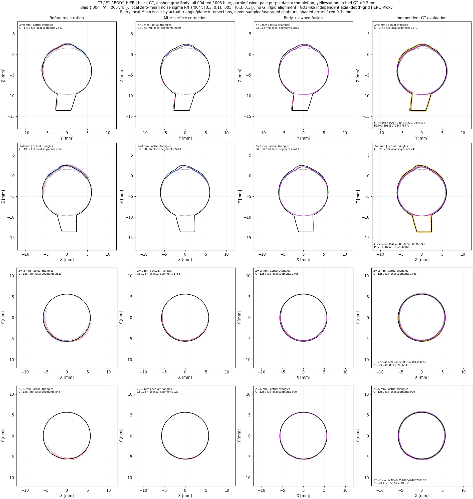
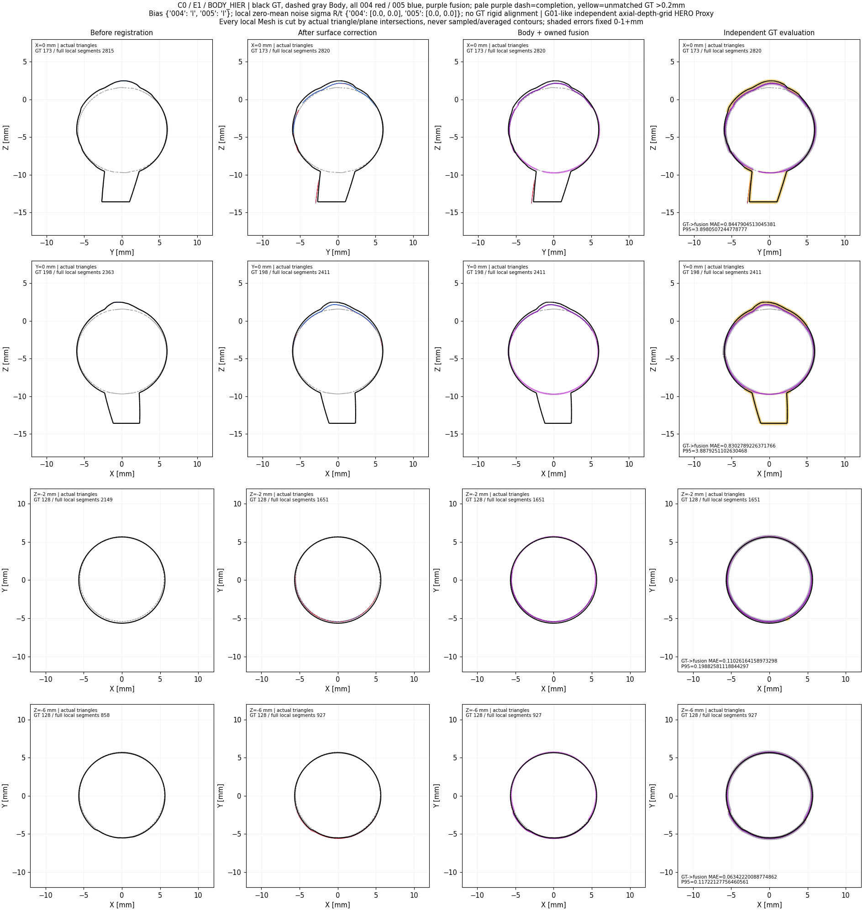
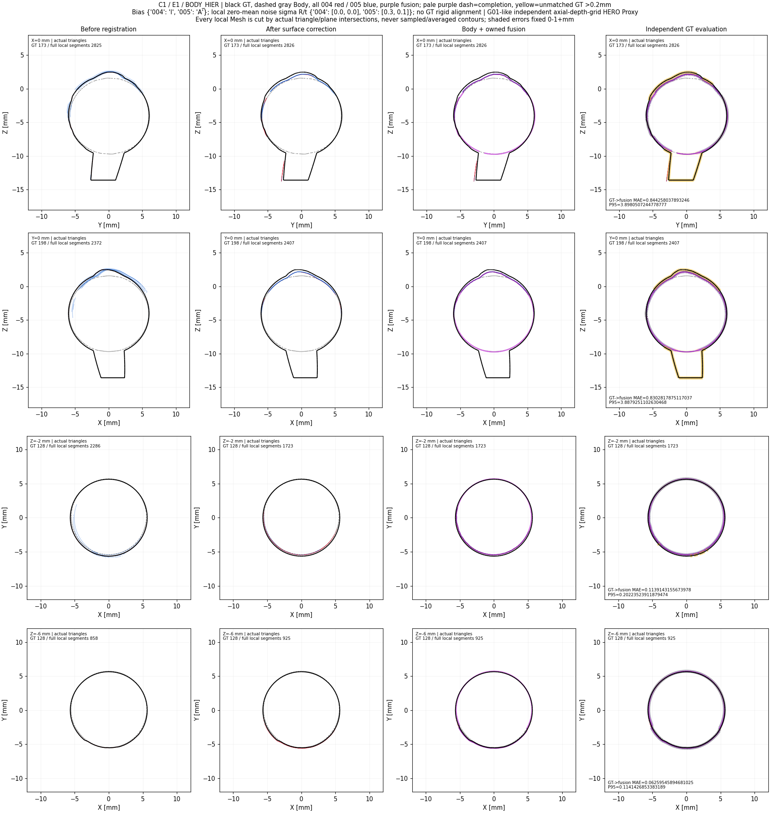
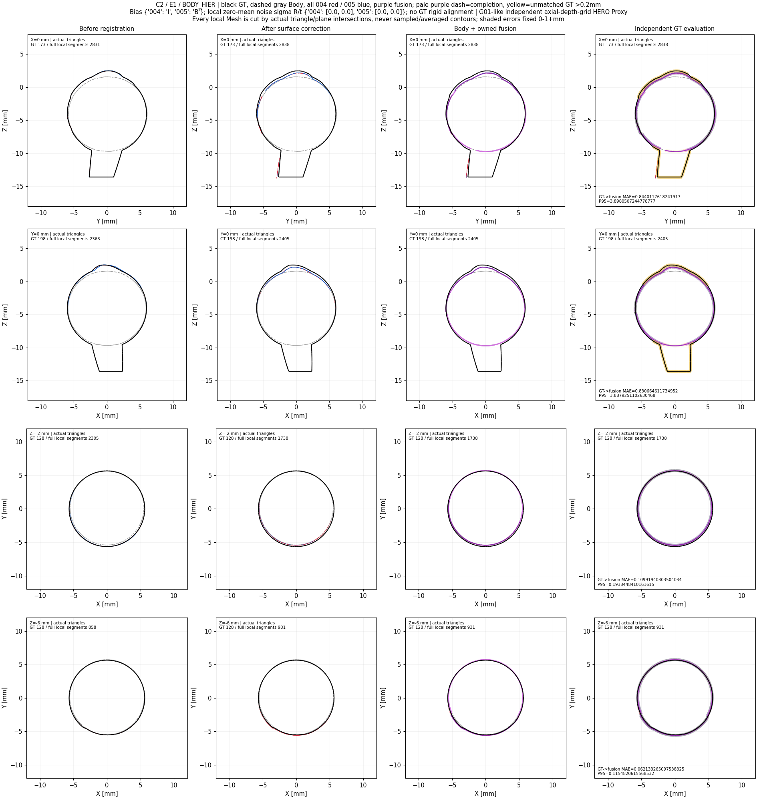
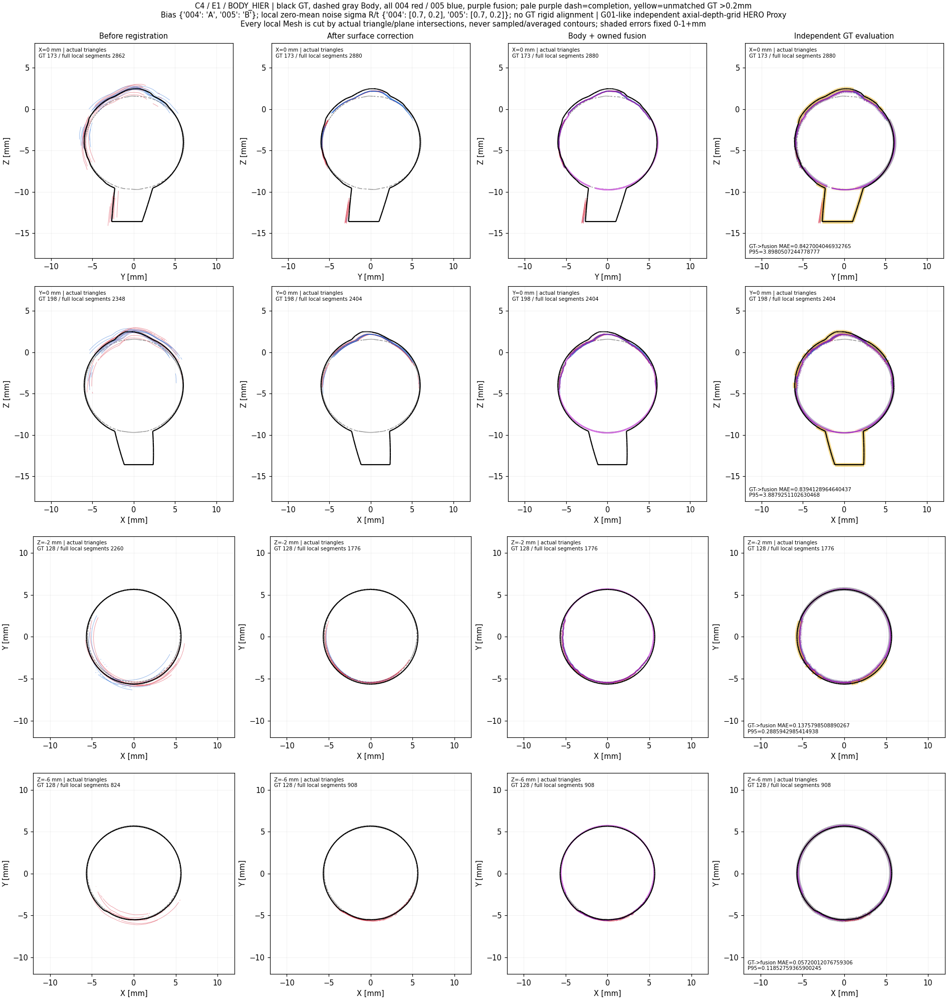
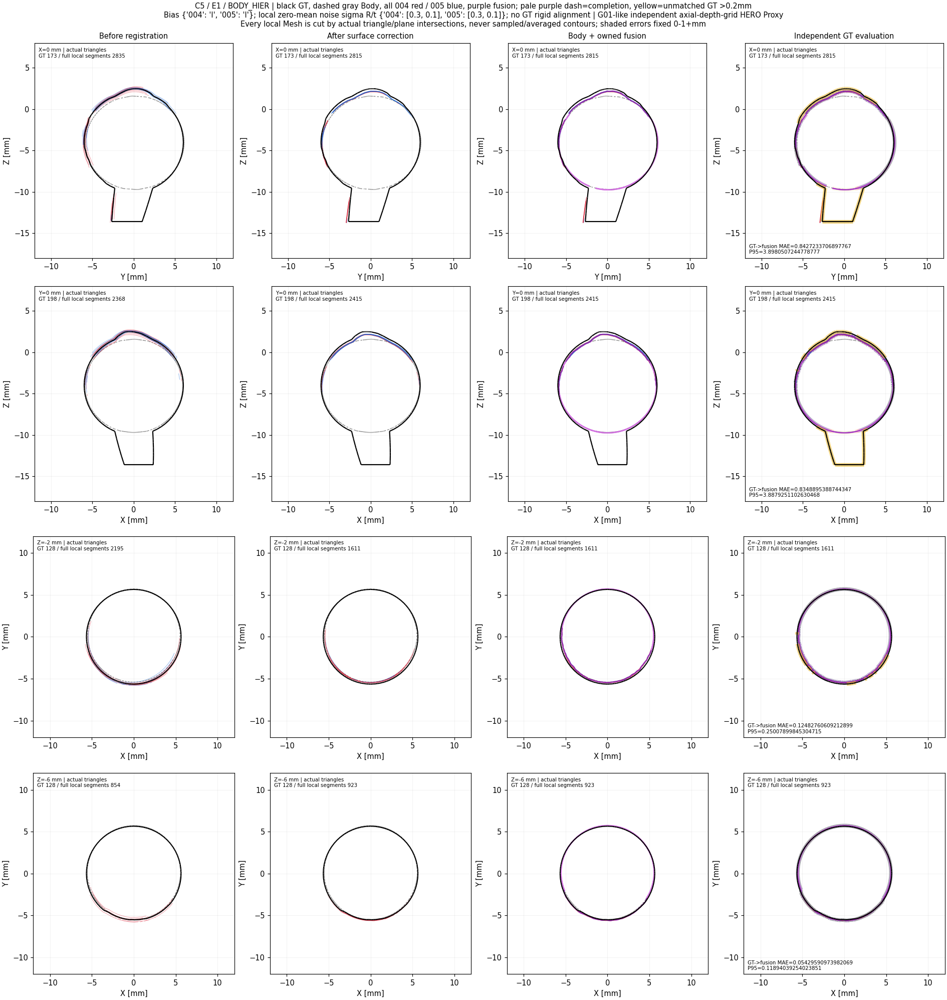
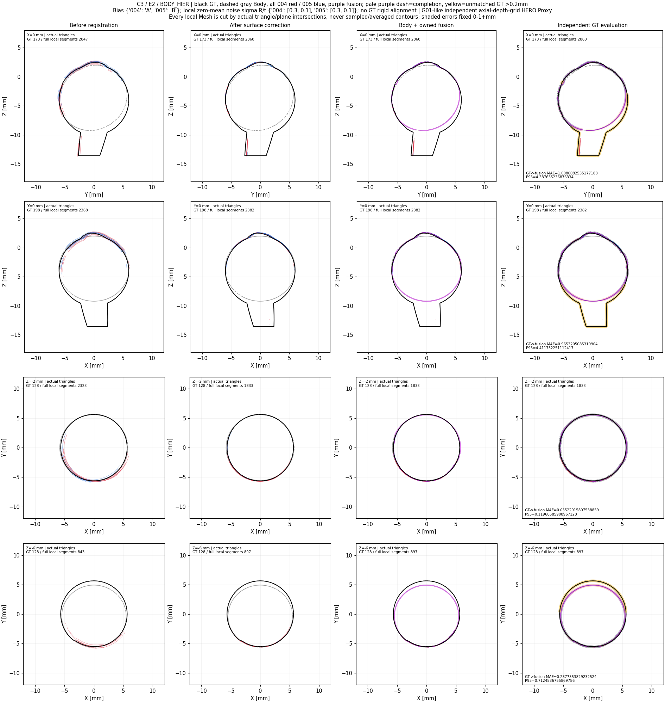
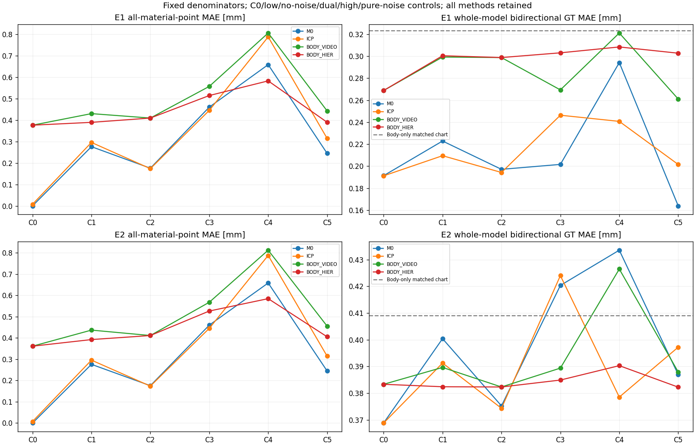

多个局部曲面 + Body 与 GT：真实Mesh切面
第一张主图：预注册C3/E1/BODY_HIER，两纵向、两横向；全部独立Mesh三角面求交，四列固定毫米范围。

科学结论仍有负结果：融合改善Body-only平均误差并不证明定位正确；C0有Body偏差，C3分层材料误差未优于不修正。主图保留未匹配与细柄缺失。
全部52组合真实四列切面 · 全顶点加权指标 · 逐帧失败 · 配对比较
逐视频、逐视角完整曲面交互 · 技术报告 · 结果卡 · 运行清单 · 全部指标CSV · Surface Ownership Map · 失败台账
C0/E1/BODY_HIER: four fixed actual Mesh sections, all independent local surfaces

C1/E1/BODY_HIER: four fixed actual Mesh sections, all independent local surfaces

C2/E1/BODY_HIER: four fixed actual Mesh sections, all independent local surfaces

C4/E1/BODY_HIER: four fixed actual Mesh sections, all independent local surfaces

C5/E1/BODY_HIER: four fixed actual Mesh sections, all independent local surfaces

C3/E2/BODY_HIER: four fixed actual Mesh sections, all independent local surfaces

All main conditions, both Body initializers and four methods

每帧真实注入/协方差 · 整体/分区域/截面 · 全部材料点/固定重叠 · 独立Mesh来源核验
历史工程回归参考，非本轮科学结果

固定同视频/跨视频总体一致性及P95
52/52切面浏览器实测 · 完整Mesh浏览器实测 · 科学结论（含负结果）